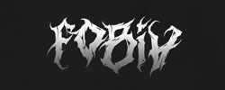
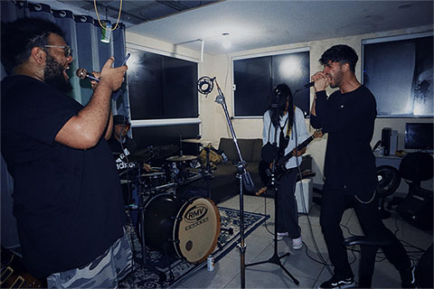

BANDA FOBIA
SOBRE

Formada em 2022 em Campo Limpo Paulista, interior de São Paulo, a Fobia é uma banda de Rock
e Nu Metal que mergulha fundo nas emoções humanas.
Com influências marcantes de nomes como Deftones, Linkin Park, Korn e Three Days Grace, a banda entrega um som visceral, pesado e emocional.
A Fobia é composta por quatro integrantes:
Gabriel (vocal e guitarra)🎸🎤
NaN (vocal e guitarra)🎸🎤
Renan (baixo)🎸
Thiago (bateria)🥁

A produção das músicas fica por conta de Gabriel e NaN, que imprimem identidade própria em cada faixa.
Mais do que músicas, a Fobia expressa sentimentos: raiva, medo, frustração, amor não correspondido, saudade, fobia, revolta e superação.
As letras são carregadas de metáforas e abrem espaço para múltiplas interpretações.
Cada ouvinte é livre para sentir e enxergar aquilo que tocar mais fundo em si.
Com 7 demos já finalizadas, a banda segue firme construindo seu caminho no underground, sendo fiel ao que acredita: música como forma de expressão crua e verdadeira.
® FOBIA
© FOBIA